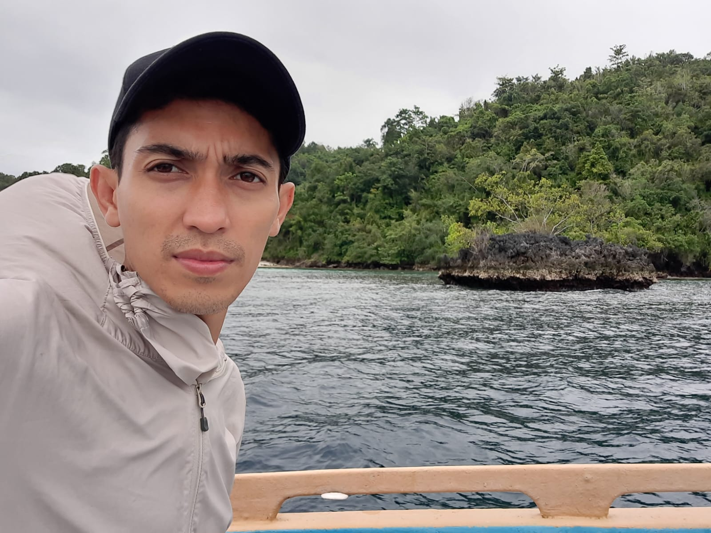

Remote Sensing & Earth Observation
Pemanfaatan citra optik dan radar untuk pemetaan tutupan lahan, habitat perairan dangkal, dan perubahan lingkungan.
PlanetScopeSentinel-2LandsatSAR
DOSEN · PENELITI · PRAKTISI GEOSPASIAL
Saya Agus Aris, akademisi di bidang Penginderaan Jauh dan Sistem Informasi Geografis. Saya mengeksplorasi pemanfaatan citra satelit, GIS, dan kecerdasan buatan untuk memahami perubahan lingkungan, ekosistem pesisir, dan budidaya rumput laut.

FOTO DUMMY — silakan ganti dengan foto pribadi Anda sebelum website dipublikasikan.
TENTANG SAYA
Fokus saya adalah mengubah data observasi bumi menjadi informasi spasial yang dapat dipahami, diuji, dan digunakan.
Saya berafiliasi dengan Program Studi Sarjana Terapan Penginderaan Jauh dan Sistem Informasi Geografis, Fakultas Vokasi, Universitas Hasanuddin.
Ketertarikan riset saya meliputi pemetaan berbasis citra satelit, analisis spasial, pemanfaatan AI untuk data penginderaan jauh, pemantauan ekosistem pesisir, serta pengembangan aplikasi WebGIS.
Website ini menjadi ruang terbuka untuk mendokumentasikan tema penelitian, publikasi yang terverifikasi, lokasi studi, materi pembelajaran, dan media ilmiah.
02 / BIDANG RISET
Tema yang menghubungkan metode geospasial dengan kebutuhan pemantauan lingkungan dan pengambilan keputusan.
Pemanfaatan citra optik dan radar untuk pemetaan tutupan lahan, habitat perairan dangkal, dan perubahan lingkungan.
Eksplorasi machine learning untuk klasifikasi citra, ekstraksi informasi, dan analisis perubahan secara terukur.
Pemetaan habitat pesisir dan pengembangan informasi spasial untuk mendukung pemantauan ekosistem.
Analisis distribusi kawasan budidaya rumput laut dan pengembangan informasi untuk perencanaan berbasis spasial.
03 / WEBGIS PENELITIAN
Peta sebaran lokasi penelitian. Setiap titik dapat memuat nama lokasi, ringkasan studi, dan tautan luaran terkait.
Koordinat dan informasi yang ditampilkan perlu diperiksa sebelum digunakan sebagai referensi ilmiah. Data contoh awal dapat diganti melalui konfigurasi atau panel admin setelah layanan database dihubungkan.
LUARAN ILMIAH
Bagian ini akan menampilkan artikel jurnal, prosiding, manuskrip, dataset, atau kode yang memiliki informasi bibliografi dan tautan sumber yang dapat diperiksa.
Publikasi terverifikasi akan ditampilkan di sini setelah data ditambahkan.
05 / MEDIA
Dokumentasi survei, visualisasi data, presentasi, dan cerita di balik proses penelitian.
Media akan muncul di sini setelah foto atau tautan ditambahkan.
06 / PEMBELAJARAN
Modul, panduan praktik, materi kuliah, dan sumber belajar untuk penginderaan jauh serta sistem informasi geografis.
Materi pembelajaran akan ditampilkan di sini setelah ditambahkan.
KOLABORASI & PERTUKARAN ILMIAH
Saya terbuka untuk pertukaran akademik dan potensi kolaborasi dalam penginderaan jauh, GIS, pemantauan pesisir, serta aplikasi geospasial.
Alamat kontak publik: agusaris@unhas.ac.id.
ANALITIK WEBSITE
Ringkasan kunjungan halaman dan negara asal pengunjung berdasarkan data yang tercatat.
Statistik akan muncul setelah database statistik disiapkan.
Statistik bersifat agregat. Negara diperkirakan dari alamat IP dan dapat tidak akurat. Pemblokir iklan, pengaturan privasi, atau gangguan layanan dapat memengaruhi pencatatan.